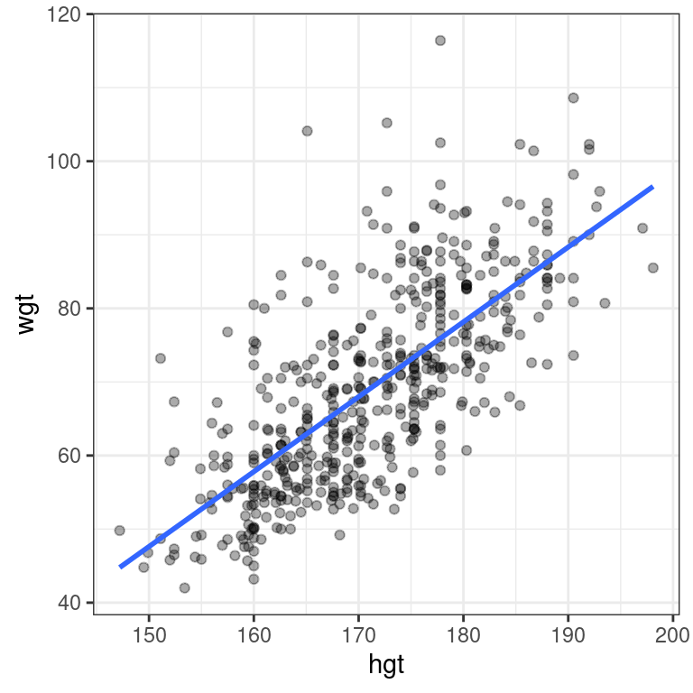
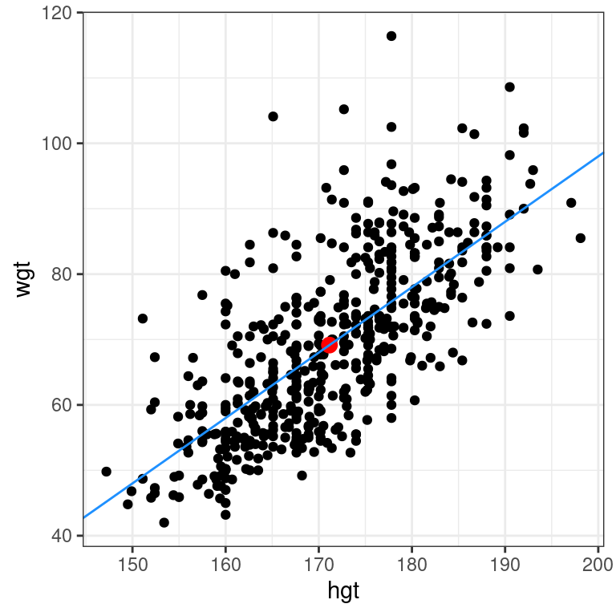
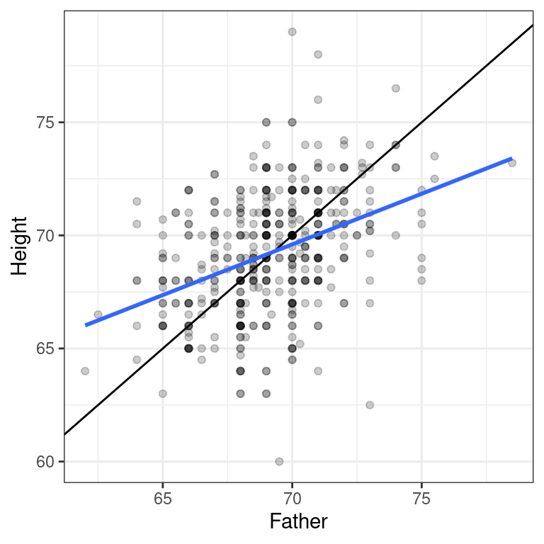
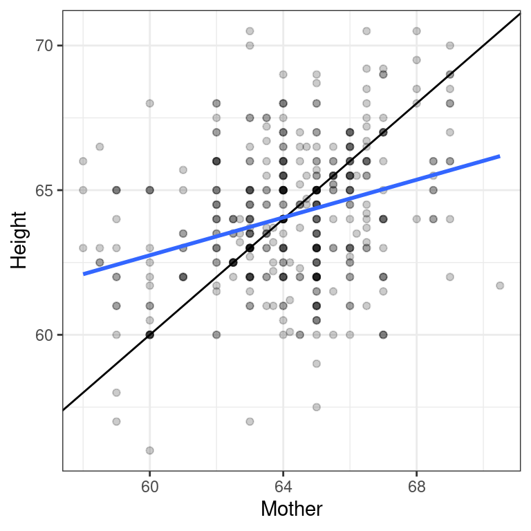

Chapter 4 Simple linear regression
With the notion of correlation under your belt, we’ll now turn our attention to simple linear models in this chapter.
4.1 The “best fit” line
The simple linear regression model for a numeric response as a function of a numeric explanatory variable can be visualized on the corresponding scatterplot by a straight line. This is a “best fit” line that cuts through the data in a way that minimizes the distance between the line and the data points.
We might consider linear regression to be a specific example of a larger class of smooth models. The geom_smooth() function allows you to draw such models over a scatterplot of the data itself. This technique is known as visualizing the model in the data space. The method argument to geom_smooth() allows you to specify what class of smooth model you want to see. Since we are exploring linear models, we’ll set this argument to the value "lm".
Note that geom_smooth() also takes an se argument that controls the standard error, which we will ignore for now.
Exercise
Create a scatterplot of body weight as a function of height for all individuals in the bdims dataset with a simple linear model plotted over the data.
library(openintro)
# Scatterplot with regression line
ggplot(data = bdims, aes(x = hgt, y = wgt)) +
geom_point(alpha = 0.33) +
geom_smooth(method = "lm", se = FALSE) +
theme_bw()
4.2 Uniqueness of least squares regression line
The least squares criterion implies that the slope of the regression line is unique. In practice, the slope is computed by R. In this exercise, you will experiment with trying to find the optimal value for the regression slope for weight as a function of height in the bdims dataset via trial-and-error.
To help, we’ve built a custom function for you called add_line(), which takes a single argument: the proposed slope coefficient.
The bdims dataset is available in your workspace. Experiment with different values (to the nearest integer) of the my_slope parameter until you find one that you think fits best.

Regression model terminology
Consider a linear regression model of the form:
\(Y=\beta_0+ \beta_1\cdot X + \varepsilon\), where \(\varepsilon \sim(0, \sigma_{\varepsilon})\)
The slope coefficient is:
\(Y\)
\(\beta_0\)
\(\mathbf{\beta_1}\)
\(\varepsilon\)
4.2.1 Regression model output terminology
The fitted model for the poverty rate of U.S. counties as a function of high school graduation rate is:
\(\widehat{poverty} = 64.594 − 0.591 \cdot hs\_grad\)
In Hampshire County in western Massachusetts, the high school graduation rate is 92.4%. These two facts imply that the poverty rate in Hampshire County is ___.
[1] 9.9856exactly 11.7%
exactly 10.0%
expected to be about 10.0%
expected to be about 11.7%
4.3 Fitting a linear model “by hand”
Recall the simple linear regression model: \[Y=b_0 + b_1\cdot X\] Two facts enable you to compute the slope \(b_1\) and intercept \(b_0\) of a simple linear regression model from some basic summary statistics.
First, the slope can be defined as:
\[b_1=r_{X,Y}\cdot \frac{s_Y}{s_X}\]
where \(r_{X,Y}\) represents the correlation (cor()) of X and Y and \(s_X\) and \(s_Y\) represent the standard deviation (sd()) of X and Y, respectively.
Second, the point \((\bar{x}, \bar{y})\) is always on the least squares regression line, where \(\bar{x}\) and \(\bar{y}\) denote the average of \(x\) and \(y\), respectively.
The bdims_summary data frame contains all of the information you need to compute the slope and intercept of the least squares regression line for body weight (Y) as a function of height (X). You might need to do some algebra to solve for \(b_0\)!
bdims_summary <- bdims %>%
summarize(N = n(), r = cor(wgt, hgt), mean_hgt = mean(hgt),
sd_hgt = sd(hgt), mean_wgt = mean(wgt), sd_wgt = sd(wgt))
bdims_summary # A tibble: 1 x 6
N r mean_hgt sd_hgt mean_wgt sd_wgt
<int> <dbl> <dbl> <dbl> <dbl> <dbl>
1 507 0.717 171. 9.41 69.1 13.3# Add slope and intercept
bdims_summary %>%
mutate(slope = r*sd_wgt/sd_hgt,
intercept = mean_wgt - slope*mean_hgt)# A tibble: 1 x 8
N r mean_hgt sd_hgt mean_wgt sd_wgt slope intercept
<int> <dbl> <dbl> <dbl> <dbl> <dbl> <dbl> <dbl>
1 507 0.717 171. 9.41 69.1 13.3 1.02 -105.4.4 Regression to the mean
Regression to the mean is a concept attributed to Sir Francis Galton. The basic idea is that extreme random observations will tend to be less extreme upon a second trial. This is simply due to chance alone. While “regression to the mean” and “linear regression” are not the same thing, we will examine them together in this exercise.
One way to see the effects of regression to the mean is to compare the heights of parents to their children’s heights. While it is true that tall mothers and fathers tend to have tall children, those children tend to be less tall than their parents, relative to average. That is, fathers who are 3 inches taller than the average father tend to have children who may be taller than average, but by less than 3 inches.
The Galton_men and Galton_women datasets contain data originally collected by Galton himself in the 1880s on the heights of men and women, respectively, along with their parents’ heights.
download.file("http://www.randomservices.org/random/data/Galton.txt", destfile = "./Data/Galton.txt")
Galton <- read.table("./Data/Galton.txt", header = TRUE)
Galton_men <- Galton %>%
filter(Gender == "M")
Galton_women <- Galton %>%
filter(Gender == "F")Compare the slope of the regression line to the slope of the diagonal line. What does this tell you?
Exercise
- Create a scatterplot of the height of men as a function of their father’s height. Add the simple linear regression line and a diagonal line (with slope equal to 1 and intercept equal to 0) to the plot.
# Height of children vs. height of father
ggplot(data = Galton_men, aes(x = Father, y = Height)) +
geom_point(alpha = 0.2) +
geom_abline(slope = 1, intercept = 0) +
geom_smooth(method = "lm", se = FALSE) +
theme_bw()`geom_smooth()` using formula 'y ~ x'
- Create a scatterplot of the height of women as a function of their mother’s height. Add the simple linear regression line and a diagonal line to the plot.
# Height of children vs. height of mother
ggplot(data = Galton_women, aes(x = Mother, y = Height)) +
geom_point(alpha = 0.2) +
geom_abline(slope = 1, intercept = 0) +
geom_smooth(method = "lm", se = FALSE) +
theme_bw()`geom_smooth()` using formula 'y ~ x'
“Regression” in the parlance of our time
In an opinion piece about nepotism published in The New York Times in 2015, economist Seth Stephens-Davidowitz wrote that:
“Regression to the mean is so powerful that once-in-a-generation talent basically never sires once-in-a-generation talent. It explains why Michael Jordan’s sons were middling college basketball players and Jakob Dylan wrote two good songs. It is why there are no American parent-child pairs among Hall of Fame players in any major professional sports league.”
The author is arguing that…
Because of regression to the mean, an outstanding basketball player is likely to have sons that are as good at basketball as him.
Because of regression to the mean, an outstanding basketball player is likely to have sons that are not good at basketball.
Because of regression to the mean, an outstanding basketball player is likely to have sons that are good at basketball, but not as good as him.
Linear regression is incapable of evaluating musical or athletic talent.